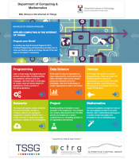

1.2: CSS Frameworks
Prepared for
OTH Regensburg
by
Eamonn de Leastar
,
WIT
Semantic-UI I
Semantic-UI II
Semantic-UI III
Semantic Part IV
Lab-1.4 Semantic UI
Lab-1.5 Semantic UI

Semantic UI Framework